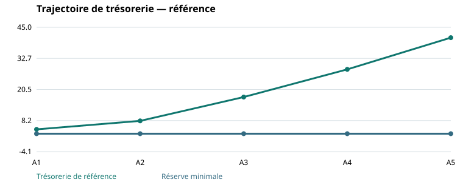

Séance 3 · 3 h 30 · Cours et approfondissements
Objectifs et parcours
- Expliquer les principales théories du financement.
- Comparer des offres au-delà du taux affiché.
- Tester service de dette, devise, dilution et marge de sécurité.
Parcours conseillé : problème initial (15 min), concepts et approfondissements (55 min), exemples résolus (30 min), applications chiffrées (70 min), cas de synthèse (30 min), synthèse et transition (10 min). Total : 210 minutes. Les sept applications sont organisées en deux séries progressives ; les corrigés et le laboratoire accompagnent la relecture.
1. Un modèle de référence : Modigliani et Miller
Le résultat de neutralité de Modigliani et Miller constitue un point de comparaison : dans un cadre idéal sans les frictions pertinentes, modifier la répartition dette/fonds propres ne crée pas à lui seul de valeur. La dette moins chère ne permet pas une baisse gratuite du coût moyen : davantage d’endettement accroît le risque supporté par les actionnaires et leur rendement requis. [MM]
Ce cadre est utile parce qu’il oblige à nommer la source d’un gain de financement. S’agit-il d’une économie fiscale, d’une garantie, d’une information mieux partagée ou d’une réduction de coûts de détresse ? Sans mécanisme explicite, affirmer que l’endettement ou le label vert « crée de la valeur » ne suffit pas.
Dans le cas, l’entreprise non cotée ne possède ni accès illimité au crédit ni marchés parfaits. Le modèle de référence ne justifie donc pas l’indifférence pratique au financement ; il aide à comprendre pourquoi les conditions concrètes comptent.
2. Arbitrage, information et incitations
L’approche par arbitrage confronte les avantages de la dette, dont l’avantage fiscal lorsque les intérêts sont déductibles, aux coûts attendus de détresse et aux contraintes qu’elle impose. La capacité d’endettement dépend de la stabilité des flux et des actifs finançables ; un optimum théorique ne se réduit pas à un ratio sectoriel unique. [SS15]
Myers et Majluf montrent comment une information supérieure des dirigeants peut rendre une émission d’actions coûteuse et conduire à renoncer à un investissement intéressant. Cela éclaire la préférence pour des ressources internes puis certains financements externes. Ce mécanisme n’est pas une règle disant que les fonds propres doivent toujours être évités. [MY]
Jensen et Meckling analysent les conflits d’intérêts associés à la dette et aux capitaux extérieurs. Des engagements contractuels et une information fiable peuvent limiter ces conflits ; des contraintes trop rigides peuvent aussi empêcher l’adaptation. Dans notre entreprise, une clause qui interdit toute dépense d’investissement supplémentaire doit être rapprochée du besoin futur d’adaptation hydrique. [JM]
3. Coût du capital et cohérence des flux
kE = taux sans risque + bêta × prime de marché
Le WACC combine des coûts de financement selon une structure cible cohérente, généralement fondée sur des valeurs de marché. Le CAPM constitue une méthode d’estimation du rendement requis des fonds propres, sous ses hypothèses. Le bêta d’une entreprise cotée reflète son exposition systématique et son levier ; ce n’est pas directement le risque d’un projet non coté. [SS13] [BD]
Avec E/V = 60 %, D/V = 40 %, kE = 14 %, kD = 6 % et T = 25 %, le WACC est 8,4 % + 1,8 % = 10,2 %. Ces nombres sont un exercice distinct ; le taux de 10 % utilisé pour comparer les projets reste une hypothèse arrondie explicite.
Des FCFF avant service de dette s’actualisent avec un taux cohérent de type WACC ; des flux aux actionnaires avec le coût des fonds propres. Retirer intérêts et principal puis actualiser au WACC mélangerait deux approches. Le bouclier fiscal n’a de valeur que si les conditions fiscales et les bénéfices permettent de l’utiliser.
4. Lire une offre de financement
| Offre pédagogique | Conditions | Risque à examiner |
|---|---|---|
| A : dette amortissable | 14 ; 6 % ; principal 2,8/an sur 5 ans ; sans frais | Charge de service dès A1 |
| B : différé de principal | 14 ; 7 % ; principal nul en A1 puis 3,5/an de A2 à A5 ; sans frais | Échéances plus élevées après A1 |
| C : fonds propres | Apport 14 ; valorisation avant apport 42 supposée négociée | Dilution et droits de gouvernance |
En C, la valeur négociée de 42 est une hypothèse d’exercice : son égalité avec les capitaux propres comptables du bilan est fortuite et ne constitue pas une méthode de valorisation. La fraction acquise par le nouvel investisseur vaut 14/(42 + 14) = 25 %.
Comparer aussi les frais, le taux fixe ou variable, l’échéancier, la devise, les garanties, les possibilités de remboursement anticipé, les conditions suspensives et les clauses d’investissement. Le taux nominal ne résume ni le coût effectif ni le risque de refinancement. [DAM] [BD]
5. Dette soutenable et risque de change
En offre A, le service total A1 comprend les intérêts 2,16 et le principal 4,8 : 6,96. Le CFADS est 17,52 − 2,84 − 1 − 4 = 9,68 ; DSCR = 1,391. Une exigence pédagogique de 1,20 laisse une marge limitée face aux chocs. Le seuil est une condition fictive d’exercice, pas une norme universelle.
Une dette en devise peut afficher un taux inférieur mais créer un décalage entre recettes et remboursements. L’OCDE met en évidence le rôle du financement en monnaie locale et les difficultés de couverture dans les économies émergentes. La comparaison doit porter sur le coût après couverture disponible ou sur des scénarios explicites de change. [OECD]
Si une échéance de 100 000 unités de devise doit être payée, elle coûte 1 M MAD au cours de 10, puis 1,2 au cours de 12. La hausse est 20 %. Des recettes d’exportation dans cette même devise peuvent offrir une couverture naturelle seulement si montants et dates concordent. Une corrélation vague avec l’export ne suffit pas.
Lecture graphique

6. Financement durable et partage des risques
Les Green Bond Principles organisent un financement fondé sur l’emploi des fonds et recommandent notamment sélection des projets, gestion des fonds et reporting. Les Sustainability-Linked Bond Principles concernent des caractéristiques financières liées à des indicateurs et objectifs. Ce sont des principes volontaires ; les conditions du contrat et les règles applicables restent à examiner. Les instruments obligataires servent ici de comparaison conceptuelle ; ils ne sont pas supposés immédiatement accessibles à notre PME. [ICMA] [SLB]
Le bénéfice d’un label n’est pas automatiquement une réduction du coût total. Une marge légèrement réduite peut être compensée par les coûts de vérification, les frais ou le suivi des indicateurs. L’incitation doit être calculée sur les encours concernés et sur les seules périodes où elle s’applique.
La finance mixte peut répondre à une défaillance ou à un risque empêchant un investissement. Les principes IFC insistent sur la justification et la concessionnalité minimale. Une garantie modifie le risque assumé par les financeurs ; elle ne rend pas gratuits les risques économiques du projet. [IFC]
7. Approfondissement — Échéanciers, coût effectif et valeur actuelle ajustée
À taux identique, deux prêts peuvent présenter des profils de trésorerie différents : remboursement constant du principal, annuité constante ou remboursement in fine. Le principal constant fait baisser les intérêts avec l’encours ; l’annuité constante réalloue progressivement le paiement entre intérêts et principal ; l’in fine préserve le cash intermédiaire mais concentre le risque à l’échéance. Le choix doit correspondre au calendrier de production des flux. [BD] [DAM]
Principal remboursé = annuité − intérêts de la période
Encours final = encours initial − principal remboursé
Le taux effectif doit être obtenu à partir des sommes effectivement reçues et payées, frais compris. Pour un prêt multi-annuel, le calcul correspond au taux qui annule la valeur actuelle de ces flux, avec leurs dates ou périodes cohérentes. Comparer le montant total d’intérêts reste utile, mais il ne remplace pas une comparaison actualisée lorsque les calendriers diffèrent.
La valeur actuelle ajustée, ou APV, sépare la valeur du projet non endetté et les effets propres du financement : valeur des boucliers fiscaux, frais, aides ou coûts attendus de détresse explicitement modélisés. L’approche WACC intègre certains de ces effets dans un taux ; l’APV les rend visibles dans des flux ou valeurs distincts. Il faut éviter de les ajouter une seconde fois lorsqu’ils sont déjà pris en compte. [MIT]
Le taux d’actualisation d’un bouclier fiscal dépend du risque et de la politique de dette retenus. L’exercice 5 suppose une dette fixée, des déductions utilisables et un taux de 6 % pour isoler le mécanisme ; cette convention ne vaut pas automatiquement pour une entreprise dont les bénéfices sont fortement incertains.
8. Approfondissement — Adapter le taux au projet et au risque du financement
Le coût des fonds propres observé pour une activité dépend de son risque économique et de son endettement. Utiliser directement le bêta d’un comparable très endetté pour un projet peu endetté mélangerait ces dimensions. Sous une hypothèse simplifiée de bêta de dette nul et une convention fiscale stable, on peut désendetter puis réendetter un bêta. [SS13]
Bêta fonds propres cible = bêta actif × [1 + (1 − T) × (D/E cible)]
Les comparables doivent avoir une activité et une exposition cohérentes. Les taux doivent aussi correspondre à la devise et au caractère nominal ou réel des flux. La relation de Fisher indique (1 + taux nominal) = (1 + taux réel) × (1 + inflation anticipée) lorsqu’on exprime cette conversion de façon cohérente. Déflater les flux puis conserver un taux nominal introduit une incohérence.
Pour une entreprise non cotée, le manque de données n’autorise pas à transformer un taux de convenance en estimation empirique. Présenter une fourchette justifiée et sa sensibilité est souvent plus transparent qu’un taux au centième de point insuffisamment documenté. Dans le cas, tous les taux restent pédagogiques.
Enfin, le risque de change concerne l’ensemble des flux liés à une dette et aux recettes qui pourraient la couvrir. Une couverture naturelle nécessite une concordance de devise, montant et date. Le coût de couverture et la disponibilité des instruments doivent entrer dans la comparaison ; l’OCDE souligne l’enjeu des ressources en monnaie locale. [OECD]
9. Trois applications corrigées
Application 1 — Un taux réduit et des frais
Deux prêts in fine de 10 sur un an : classique à 6 %, sans frais ; offre durable à 5,5 % avec 0,1 de frais initiaux. Ignorer fiscalité et autres frais. Quel coût annuel effectif pour l’offre durable ?
Correction expliquée
L’entreprise reçoit 9,9 et rembourse 10,55. Coût = 10,55/9,9 − 1 = 6,566 %, supérieur à 6 %. Comparer des flux datés, pas uniquement les coupons.
Application 2 — Différé de principal
Comparer le service A1 des offres A et B, nouvelle dette seulement. Quel est le service B en A2 ?
Correction expliquée
A1 : A = 0,84 + 2,8 = 3,64 ; B = 0,98. En A2, B = 0,98 + 3,5 = 4,48. Le différé reporte le principal ; il ne le supprime pas. Il faut recalculer impôt et trésorerie dans toute la prévision, avec les intérêts B propres à son échéancier.
Application 3 — Concessionnalité minimale
Un projet a un coût initial de 4 et une valeur actuelle des flux futurs de 3,6, avant aide. Quel transfert initial comblerait exactement l’écart, toutes choses égales ?
Correction expliquée
Le transfert est 0,4. Il neutralise l’écart financier modélisé, sans démontrer l’additionnalité ou l’intérêt social. Une garantie ne se compare pas directement à une subvention nominale de 0,4 : il faut modéliser ses effets, sa probabilité d’appel et son coût.
10. Applications supplémentaires — Échéanciers, APV et devise
Application 4 — Comparer trois profils de remboursement sur cinq ans
Pour le nouveau financement seul : A emprunte 14 à 6 %, principal 2,8/an ; B emprunte 14 à 7 %, principal nul A1 puis 3,5/an ; C emprunte 14 à 6 % avec annuité constante sur cinq ans. Sans frais ni fiscalité, calculer annuité C, service de A et B et intérêts totaux.
Corrigé détaillé : calcul, interprétation et limites
| Année | Service A | Service B | Service C |
|---|---|---|---|
| A1 | 3,640 | 0,980 | 3,324 |
| A2 | 3,472 | 4,480 | 3,324 |
| A3 | 3,304 | 4,235 | 3,324 |
| A4 | 3,136 | 3,990 | 3,324 |
| A5 | 2,968 | 3,745 | 3,324 |
Annuité C = 14 × 0,06/[1 − 1,06^(-5)] = 3,323550. Intérêts totaux A = 2,52 ; B = 3,43 ; C = 5 × annuité − 14 = 2,618.
Interprétation et limites. B allège A1 mais alourdit le coût et les années suivantes. C lisse le paiement. Le calendrier du projet, les frais, l’impôt et le risque de refinancement doivent compléter la comparaison des seuls intérêts nominaux.
Application 5 — Valoriser séparément un bouclier fiscal
Variante APV : considérer, pour ce seul exercice, une VAN non endettée de 0,752992. Un prêt de 6 à 6 % est remboursé par tiers sur trois ans ; impôt 25 % et intérêts intégralement déductibles. Les boucliers sont actualisés à 6 %. Frais initiaux 0,08 sans déduction fiscale. Calculer la valeur ajustée.
Corrigé détaillé : calcul, interprétation et limites
Intérêts : 6 × 6 % = 0,36 ; puis 4 × 6 % = 0,24 ; puis 2 × 6 % = 0,12. Boucliers : 0,09 ; 0,06 ; 0,03.
Valeur actuelle = 0,09/1,06 + 0,06/1,06² + 0,03/1,06³ = 0,163494. APV = 0,752992 + valeur actuelle − 0,08 = 0,836486.
La VAN de départ est ici explicitement donnée comme non endettée : on ne récupère pas une valeur calculée avec un WACC intégrant déjà ce même bouclier pour lui ajouter l’économie fiscale une seconde fois.
Interprétation et limites. L’effet fiscal est conditionnel à la déduction effective et au bénéfice disponible. Un résultat positif de l’APV ne démontre pas que le service de dette sera supportable à chaque échéance.
Application 6 — Désendetter puis réendetter un bêta
Comparables pédagogiques : bêta fonds propres 1,4 ; D/E = 0,5 ; impôt 25 %. Cible du projet D/E = 0,3. Taux sans risque 3 %, prime de marché 6 %, coût de dette 5 %. Supposer même devise, taux nominaux et bêta de dette nul. Calculer bêta actif, bêta cible, coût des fonds propres et WACC.
Corrigé détaillé : calcul, interprétation et limites
Bêta actif = 1,4/[1 + 0,75 × 0,5] = 1,018182. Bêta cible = bêta actif × [1 + 0,75 × 0,3] = 1,247273.
kE = 3 % + bêta cible × 6 % = 10,4836 %. D/V = 0,3/1,3 = 23,077 % ; E/V = 76,923 %. WACC = kE/1,3 + (0,3/1,3) × 5 % × 0,75 = 8,9297 %.
Interprétation et limites. Les pondérations de marché cibles sont distinctes des ratios comptables historiques. Ces paramètres ne remplacent pas les taux du modèle commun. La méthode ne suffit pas à corriger automatiquement tous les risques pays, de taille ou de liquidité.
Application 7 — Le taux étranger moins élevé est-il avantageux ?
Une entreprise a besoin de 20 M MAD pour un an. Option locale : 7 %, in fine. Option étrangère : emprunter 2 millions d’unités de devise au cours initial 10 MAD, taux 4 %, in fine. Ignorer impôt et frais. Calculer le coût si le cours final atteint 12, puis le cours d’indifférence entre les options.
Corrigé détaillé : calcul, interprétation et limites
Remboursement local = 20 × 1,07 = 21,4 M MAD. Remboursement étranger = 2 × 1,04 = 2,08 millions de devise ; au cours 12, il coûte 24,96 M MAD, soit 3,56 de plus.
Le cours d’indifférence est 21,4/2,08 = 10,288462 MAD. Une hausse du cours au-delà d’environ 2,885 % annule l’avantage nominal dans cet exercice. Au cours inchangé de 10, le remboursement étranger serait 20,8.
Interprétation et limites. Cette comparaison porte sur une exposition non couverte. Un contrat à terme ou des recettes export dans la même devise exigent un autre calcul. Ne pas traiter le différentiel de taux comme une économie certaine.
11. Cas de synthèse : une recommandation conditionnelle
Atelier, 30 minutes. Choisir entre A, B et C à partir de la référence et d’un stress. Comparer coût, liquidité A1, service futur, dilution et possibilité d’adapter le programme. Rédiger une recommandation comportant une condition de financement et une information à obtenir.
Éléments de solution
A respecte les seuils annuels de référence, mais la séance 5 montrera une tension en scénario défavorable. B améliore A1 et concentre le service après le différé. C préserve le cash de dette mais dilue les associés et implique un accord sur la valeur et les droits. Aucune option n’est supérieure sur tous les critères. Un mix, un programme phasé ou une réserve confirmée doivent être évalués avec leurs propres flux.
Erreurs à éviter : fonds propres considérés gratuits ; différé confondu avec réduction de dette ; coût comptable utilisé comme coût de marché ; bouclier fiscal supposé certain ; financement vert assimilé à rentabilité du projet.
Transition : la séance 4 examine si l’entreprise doit détenir les actifs ou accéder au service par contrat ou partenariat. Le besoin de financement dépend aussi du mode de développement.
Laboratoire — Comparer coût affiché et coût effectif
Références mobilisées
- [MM] Académie royale des sciences de Suède (1990). Présentation scientifique des contributions de Miller, Modigliani et Sharpe. Consulter la source.
- [SS15] Schoenmaker, D. et Schramade, W. (2023). Capital Structure. Chap. 15, p. 431–462. Consulter la source.
- [MY] Myers, S. C. et Majluf, N. S. (1984). Corporate financing and investment decisions when firms have information that investors do not have. Journal of Financial Economics, 13(2), 187–221. Consulter la source.
- [JM] Jensen, M. C. et Meckling, W. H. (1976). Theory of the firm: Managerial behavior, agency costs and ownership structure. Journal of Financial Economics, 3(4), 305–360. Consulter la source.
- [SS13] Schoenmaker, D. et Schramade, W. (2023). Cost of Capital. Chap. 13, p. 367–394. Consulter la source.
- [BD] Berk, J. et DeMarzo, P.. Corporate Finance, 6e édition, Pearson. Chapitres 2, 12, 14–18, 22, 24–27 et 30–31 selon la séance. Consulter la source.
- [DAM] Damodaran, A. (NYU Stern). Corporate Finance : notes, problèmes et tableurs ; ensembles actualisés au printemps 2026. Consulter la source.
- [OECD] OCDE (2025). Unlocking local currency financing in emerging markets and developing economies. Consulter la source.
- [ICMA] ICMA (2025). Green Bond Principles, juin 2025 : principes volontaires relatifs à l’emploi des fonds. Consulter la source.
- [SLB] ICMA (2024). Sustainability-Linked Bond Principles, juin 2024. Consulter la source.
- [IFC] IFC. How Blended Finance Works : justification, concessionnalité minimale et soutenabilité commerciale. Consulter la source.
- [MIT] Jenter, D. et Lewellen, K. (2003), MIT Sloan. Finance Theory II, 15.402 : cours sur les flux, WACC/APV, structure du capital et options réelles. Consulter la source.
Les calculs, exercices et données du cas sont des constructions pédagogiques originales. Les sources fondent les concepts et précautions indiqués, sans constituer une validation des paramètres fictifs.